Function Node - Empower Workflows with Custom Code¶
The Function node is a powerful component that enables you to extend your automation flows with custom business logic and data processing capabilities. By embedding JavaScript or Python code directly into your tool flows, you can manipulate variables in ways that preset nodes can't achieve. Configuration options provide you the ability to specify input and output variables and write corresponding execution code.
Key Capabilities¶
- Custom Script Execution: Write and execute JavaScript or Python code inline or leverage pre-deployed custom functions.
- Dynamic Data Processing: Transform, validate, and manipulate data flowing through your automation.
- Reusable Functions: Import and use pre-built functions from your organization's script library.
- Access Agent Memory: Leverage Agent Memory to perform context-aware processing.
Common Use Cases¶
- Data Transformation: Convert data formats, parse JSON/XML, or restructure information between nodes.
- Business Logic Implementation: Apply custom validation rules, calculations, or decision-making logic.
- Text Processing: Perform string manipulation, regex operations, or natural language processing.
- Mathematical Operations: Execute complex calculations or statistical analysis on your data.
How It Works¶
The Function Node integrates seamlessly into your tool flows, accepting inputs from previous nodes and passing processed outputs to subsequent nodes. You can either write code directly in the built-in editor or reference custom functions from deployed scripts. The node supports both static and dynamic inputs through context variables, making it adaptable to various automation scenarios.
{kind=link}
In this document, you will learn how to add Function nodes to your flows, configure them with custom code or functions, handle inputs and outputs, and test your implementations.
Add and Configure a Function Node¶
Setting up a Function node includes adding it at the appropriate location in the flow and configuring its properties.
Steps to add and configure the node:
Step 1: Open Flow Builder¶
- Log into the the Platform and select Tools under modules.
- Select your tool and select Go to Flow.
Step 2: Add the Function Node¶
- In the flow builder, click the “+” icon on any existing node on the canvas and select Function from the pop-up menu.
- Alternatively, drag the Function node from the Assets panel onto the canvas.
Step 3: Configure the Node¶
Click the added node to open its properties dialog box. The General Settings for the node are displayed. 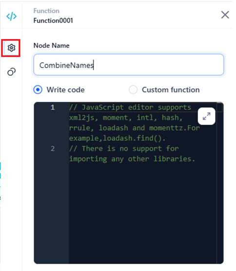
{kind=link}
Enter or select the following information:
-
Node Name: Enter an appropriate name for the node based on its functionality or purpose.
-
Select one of the following options to define and execute a function within the node:
- Write Code: Write a custom code in the built-in editor for the function you want to execute. Learn more.
- Custom Function: Use a custom function from an imported and deployed script. Learn more.
For the above options, you can define a script in JavaScript or Python with specific logic, static or dynamic input arguments, and output values.
Step 4: Add Connections¶
Click the Connections icon in the left navigation and select Go to Node for success and failure conditions.
{kind=link}
- On Success > Go to Node: After the current node is successfully executed, go to a selected node in the flow to execute next. For example, you can go to an AI node to use the processed data from the Function node.
- On Failure > Go to Node: If the execution of the current node fails, go to an appropriate node having a custom error message configured for this node.
Step 5: Test the Flow¶
Finally, test the flow and fix any issues found.
Standard Errors
You can see compilation and runtime errors, if any, during the execution of the script/node.
Define and Execute a Function For The Node¶
The node provides two options to define and execute its function:
Using Write Code¶
To write a custom function code from scratch (define its logic and flow), follow the steps below:
-
Select the Write Code option and click the Expand icon to open the script editor.
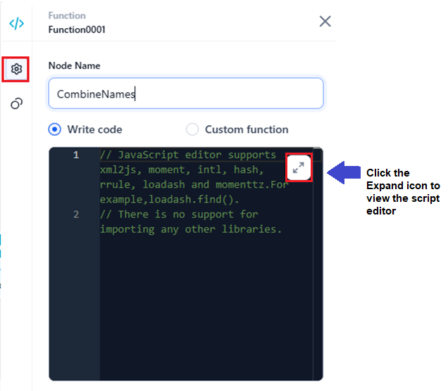
-
Follow the steps below to complete the process.
-
Select the required coding format in the script editor.
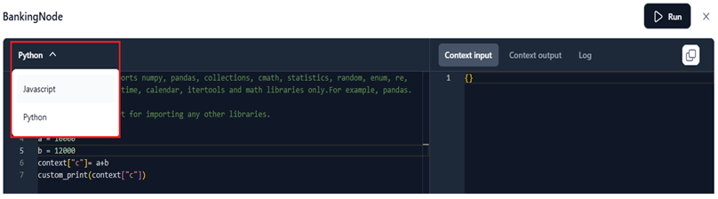
-
Use these syntaxes to define the code in JavaScript or Python. You can add static or dynamic input variables in the code to generate the output.
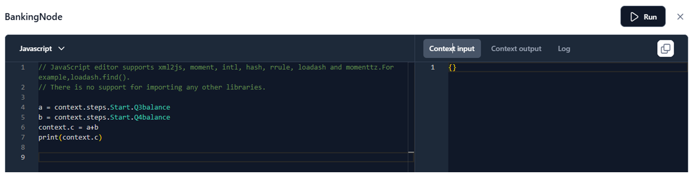
-
Click Run in the script editor to test the function.
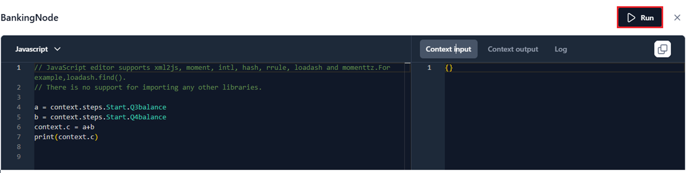
The script editor has the following tabs representing the code components:
- Context Input: Displays the context input(s) fetched from the Start node or the static inputs in the code.
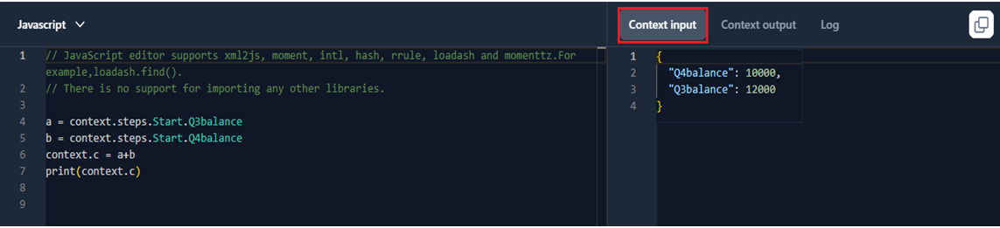
- Context Output: Displays the output generated by the script.
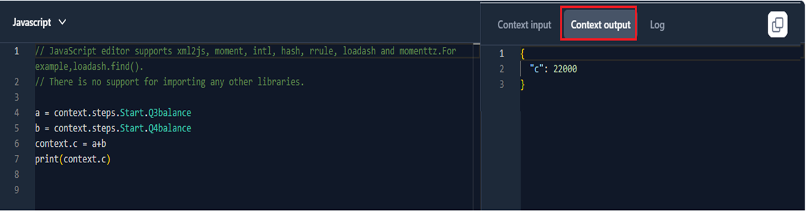
- Log: Displays the code execution log, including the output or error(s).
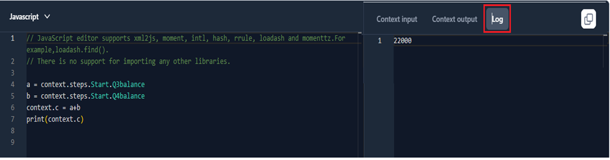
-
{kind=link}
{kind=link}
{kind=link}
{kind=link}
{kind=link}
{kind=link}
{kind=link}
Using Static or Dynamic Values in the Script¶
Define Static Input Variables¶
- In the script editor, select the coding format from the dropdown.
- Define the input variables and their values as shown below.
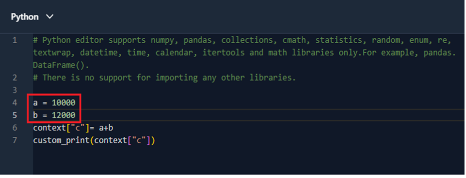
{kind=link}
Define Dynamic Input Variables¶
- In the script editor, select the coding format from the dropdown.
- Define the input variables and define dynamic values using context variables in the defined format, as shown below.
JavaScript
{kind=link}
Python
{kind=link}
Context Variables for Dynamic Inputs¶
Before you run the flow, provide clear instructions for the model to follow by adding the input variable(s) using context variables. Context variables allow you to include dynamic values in the script that a node executes to generate its output. The JSON code editor supports both JavaScript and Python formats.
Syntaxes for the Context Input¶
JavaScript
The recommended syntax to fetch dynamic variables using JS in the context input is: {{context.steps.Start.variable-name}}
For example, context.steps.Start.Q3balance
Python
The recommended syntax to fetch dynamic variables using Python in the context input is: {{context["steps"]["Start"]["variable-name"]}}
For example, context["steps"]["Start"]["Q3balance"]
The above syntaxes fetch the variable “Q3balance” that you define in the Start node. Learn more.
Using Agent Memory in the script¶
Memory Stores in Agentic Apps enable agents to retain, access, and manipulate information during a session or across sessions. The data stored in memory can be extremely useful for providing context and state persistence within the tools. The Function node supports accessing agent memory, allowing you to create dynamic, context-aware, and stateful logic directly within the node.
When to Use
Some of the common use cases include:
- Retaining and reusing information across different steps in an agent execution.
- Enabling conditional logic based on past user interactions or stored data.
- Sharing data between tools without explicitly passing it as input parameters.
Learn More about Memory Stores.
Memory Store Data Format¶
Data is stored in the memory stores in JSON format and follows the JSON Schema specification. Always check the schema of the memory store you are accessing to ensure that your set/get operations match the defined field names and data types.
Syntax to Manage Agent Memory in Function Node¶
-
Get Content from agent memory
Syntax: get_content (memory_store_name, projections Optional)
- memory_store_name(string): The technical name of the memory store.
- projections (optional): JSON object specifying the fields to retrieve. If omitted, the entire record is returned.
Example: To fetch the content of the notes field from a memory store, my-notes, use the following code:
-
Set Contents to Agent Memory
Syntax: set_content (memory_store_name, content)
- memory_store_name(string): The technical name of the memory store.
- content: Content to be set to the memory store.
Example: To set a new note to the memory store, my-notes, use the following code:
-
Delete Contents of Agent Memory Store
Syntax: delete_content (memory_store_name)
Example: To delete the contents of the memory store, my-notes, use the following code:
Points to Note:
- Memory stores can be accessed as per their defined scope.
- Use projections to use the memory store efficiently.
- Refer to the schema of the memory store for field names and data types.
- Handle error conditions.
Execute a Custom Function¶
Selecting Custom Function invokes a function from an imported and deployed script when running the node flow. The steps to set it up are summarized below:
- Step 1: Select a Script.
- Step 2: Select a Function from the Script.
- Step 3: Map the Input Arguments..
- Step 4: Test the Script and Function Configuration.
Step 1: Select a Script¶
To select a custom script deployed in your account, follow the steps below:
Note
The deployed scripts are listed under Settings > Manage custom scripts. Learn more.
- Select the Custom function option for the Function node.
- Select a deployed script from the list to invoke its function by specifying the Script name.
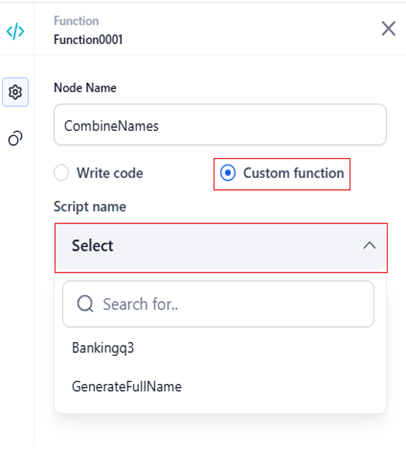
{kind=link}
If no scripts are deployed, the following message is displayed.
{kind=link}
To deploy a custom script, follow the steps below:
- Click Deploy custom scripts.
- The system navigates to the Settings > Manage custom scripts page.
- Follow the steps mentioned here to deploy a custom script.
Once an existing or new script is deployed (after a project is imported), it appears in the Script name list for the Function node.
Step 2: Select a Function from the Script¶
To select a function the node must execute, follow the steps below:
-
Choose the function the node should invoke from the list for Function name.
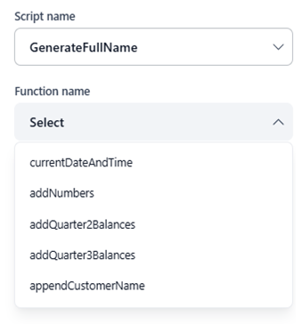
Note
- All the functions defined in the main file are automatically listed in the dropdown.
- Only one function can be selected at a time.
- Functions from undeployed or draft script versions cannot be selected. Only deployed scripts are supported.
- You can look up a specific function using the search option.
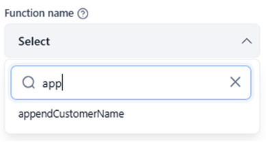
{kind=link}
{kind=link}
When you select a function, the Input Arguments section appears. Arguments are automatically detected from the script and filled in the UI for you if specified in the function. If not, you must add values for each input parameter defined in the function, as discussed below.
Step 3: Map Input Arguments¶
The next step is to map input arguments of the selected function to static or dynamic values based on the selected data type, as discussed below.
Important
By default, all arguments passed to the function are currently sent as 'string'. If your function requires other data types, please select the required type from the data type dropdown list in the Input Arguments section. The supported types include String, Number, JSON, and Boolean.
{kind=link}
Key Considerations
- Input parameters of the function in the script’s main file are automatically detected and displayed as fields in the UI.
- You must select the correct data type for the argument from the dropdown, based on its function definition. If the chosen data type does not match, a data mismatch error will occur.
-
You can assign either static or dynamic values to the input fields using context variables. These values are validated against the selected data type to detect any mismatches. Use the format mentioned here for dynamic values.
Static values
Type the values in the text field.
Dynamic Values
To map dynamic values, type the context object format and select the appropriate variable(s) from the suggestions, as shown in the example below.
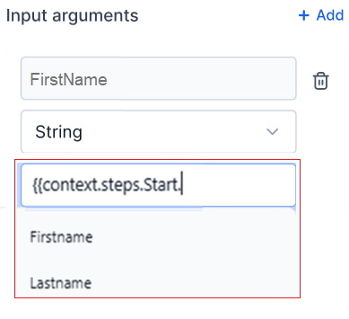
Note
- When double curly braces “
{{“ are typed in the value field, suggestions for context objects appear. - These suggestions list all context objects available for the flow in a list.
- You can also search from the list to select.
- The Add button lets you dynamically pass arguments to your function. The coding language must support additional arguments, and these should be defined at the function parameter level. If the function does not support additional arguments, the operation may fail.
- When double curly braces “
-
Input argument mapping is required for deployment. You can test the function and tool, but you cannot deploy until the mapping errors shown below are fixed.
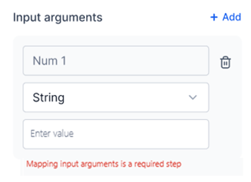
{kind=link}
{kind=link}
{kind=link}
Step 4: Test the Script and Function Configuration¶
To test the custom function configuration, follow the steps below:
-
Click the Test button in the General Settings panel.
{kind=link}
- In the Input panel, enter values to test the code. Configured values appear by default, but you can edit or reset them as needed.
- Click Execute to run the function with the configured input arguments.
Results Panel¶
In this example, for a Banking tool flow, the appendCustomerName function from the GenerateFullName script is executed with firstName and lastName as input arguments. The function combines them to generate the full name. After execution, the following details appear in the Results panel:
Input
All the configured input parameters and their values are displayed in this section.
Edit Input
To edit inputs for the function and re-execute tests, click Edit input.
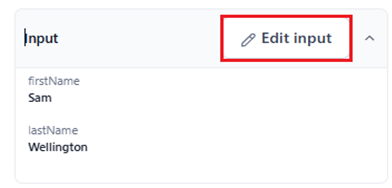
{kind=link}
Output
From the Output API response, the result (of the function code) and function run ID keys from the container are shown in this section. The time taken to generate the output is also displayed.
Click the Copy icon to copy the output.
Success Scenario
{kind=link}
Error Scenario
{kind=link}
Key Considerations
- Successful API calls return output values from the script.
- The function’s result key value from the script is saved to the function node’s output (End node) as
{{context.steps.functionnodename.output}}. -
Errors are displayed in the panel if an API request fails. The error logs are also displayed.
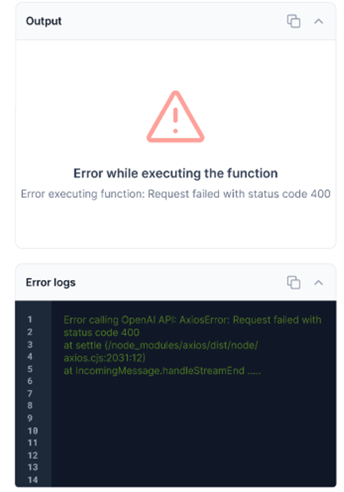
-
The function’s error/stderr value from the script is saved to the function node’s output (End node) as
{{context.steps.functionnodename.error}}.
{kind=link}
Logs
The Logs section displays success and error logs from function execution to support debugging.
Values under the 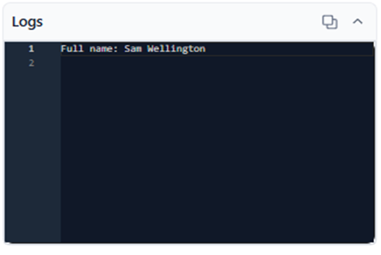stdout and stderr keys are shown here.
{kind=link}
After testing the custom function, the final step is to run and test the complete flow. Learn more.
Test the Node Flow¶
After adding and configuring the node as mentioned here, follow the steps below to test the flow:
Step 1: Add Static or Dynamic Inputs¶
Static Inputs¶
To run the flow for static inputs, follow the steps below:
Note
In this case, you do not need to add input variables using the Start node.
- Manually enter the required static input arguments and their values in the script editor. Learn more.
- Click the Run Flow button at the top-right corner of the flow builder.
Dynamic Inputs¶
To run the flow for dynamic inputs, follow the steps below:
- Click the Input tab of the Start node, and click Add Input Variable to configure the input for the flow’s test run. Learn more.
{kind=link}
- Add the Name(key) value, select the data type for Type, and provide a description in the Enter input variable window. For example, in the banking flow, to get the sum of two balances, one in Q3 and the other in Q4, you must define two input variables, “Q3balance” and “Q4balance,” as shown below.
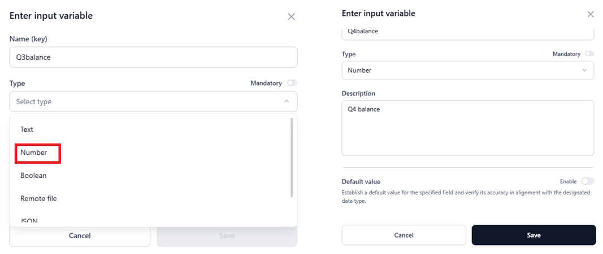
- Click Save.
{kind=link}
Once you define the input variables, you must add the output variable(s) and run the flow.
Important
- You can use the Start node’s input variables as context variables in the script editor to accept dynamic values and generate the output. To refer to the input variable, follow the syntax mentioned here.
- Once you run the node’s flow, the result gets stored in the output variable of the Start node. Additionally, this key is mapped to the End node, where you can define its value.
{kind=link}
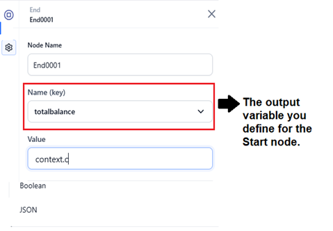
Step 2: Add the Output Variable¶
To define the output variable, follow the steps below:
- Select the Start node and click the Output tab.
{kind=link}
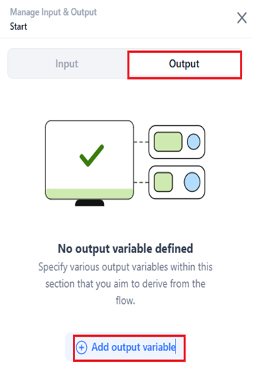
- Click Add Output Variable.
- Enter the value for Name (key) and select the data type for Type.
- Click Save.
{kind=link}
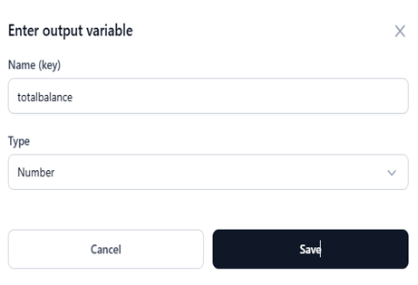
Step 3: Run the Tool Flow¶
To run and test the tool flow, follow the steps below:
-
Click the Run Flow button at the top-right corner of the flow builder.
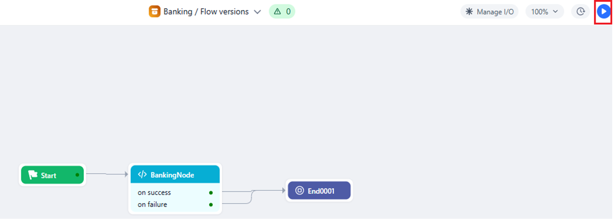
-
(Optional) Provide input to test the flow if you have configured it in the Start node. Otherwise, go directly to the next step.
-
Click Generate Output.
{kind=link}
{kind=link}
The Debug window generates the flow log and results for the given input(s), as shown below. Learn more about running the tool flow.
{kind=link}
Access the Function Node’s Output¶
The node’s output is stored in a context variable. You can access the variable using the syntax:
{{context.steps.FunctionNodeName.output}
For example, context.steps.Bankingnode.output
Note
The Platform can automatically recognize variables and outputs. To do so, type "context.steps." and you will see the available variables, nodes, and node outputs.
Import, Export, and Share a Tool with Function Node¶
Import a Tool
When you import a tool, a .zip package is imported from your local system with the flow definition, app definition, and environment variables JSON files from another environment. Learn more.
If the tool contains a Function node, its configuration is automatically fetched and populated in the new environment (tools automation flow) where the tool is being imported.
Script Linking Behavior¶
-
If the same script is already deployed in the new environment, the Function node is automatically linked (auto-linking).
-
If the script is not deployed, validation errors are shown to help identify missing or unresolved scripts.
{kind=link}
Export a Tool
When you export a tool that contains a Function node, its configuration should be available in the callflow.json file within the exported package. Learn more.
The following confirmation window is displayed before the export begins.
{kind=link}
Do one of the following:
- If you’re unsure, click Let me check.
- If all necessary components such as AI models, linked tools, and custom scripts or functions are already in place, click Yes, I will take care.
Share a Tool
When you share a tool with another user within the same account, all configurations of the Function node are retained and available to the recipient as well.
Related resource
- Supported Libraries - list of supported libraries in the script editor of the Function node.